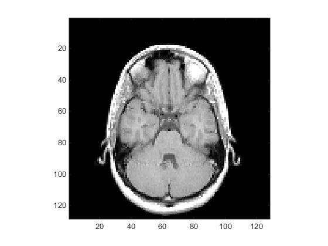
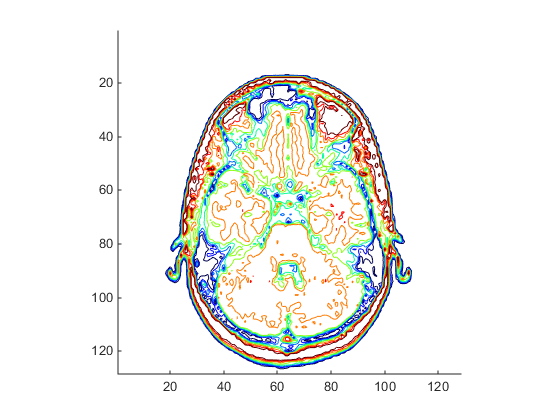
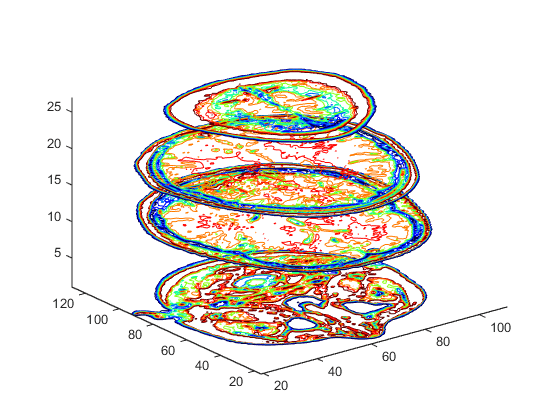
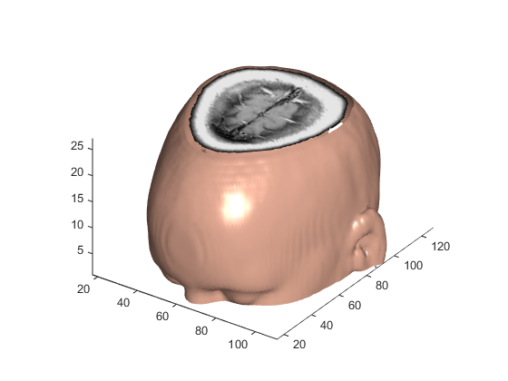

Techniques for Visualizing Scalar Volume Data
What Is Scalar Volume Data?
Typical scalar volume data is composed of a 3-D array of data and three coordinate arrays of the same dimensions. The coordinate arrays specify the x-, y-, and z-coordinates for each data point.
The units of the coordinates depend on the type of data. For example, flow data might have coordinate units of inches and data units of psi.
A number of MATLAB® functions are useful for visualizing scalar data:
Slice planes provide a way to explore the distribution of data values within the volume by mapping values to colors. You can orient slice planes at arbitrary angles, as well as use nonplanar slices. (For illustrations of how to use slice planes, see
slice, a volume slicing example, and slice planes used to show context.) You can specify the data used to color isosurfaces, enabling you to display different information in color and surface shape (seeisocolors).Contour slices are contour plots drawn at specific coordinates within the volume. Contour plots enable you to see where in a given plane the data values are equal. See
contourslicefor an example.Isosurfaces are surfaces constructed by using points of equal value as the vertices of
patchgraphics objects.
Ways to Display MRI Data
An example of scalar data includes magnetic resonance imaging (MRI) data. This data typically contains a number of slice planes taken through a volume, such as the human body. MATLAB includes an MRI data set that contains 27 image slices of a human head. This example illustrate the following techniques applied to MRI data:
A series of 2-D images representing slices through the head
2-D and 3-D contour slices taken at arbitrary locations within the data
An isosurface with isocaps showing a cross section of the interior
Changing the Data Format
The MRI data, D, is stored as a 128-by-128-by-1-by-27
array. The third array dimension is used typically for the image color data.
However, since these are indexed images (a colormap, map, is
also loaded) there is no information in the third dimension, which you can
remove using the squeeze command. The result is
a 128-by-128-by-27 array.
The first step is to load the data and transform the data array from 4-D to 3-D.
load mri D = squeeze(D);
Displaying Images of MRI Data
To display one of the MRI images, use the image command:
figure colormap(map) image_num = 8; image(D(:,:,image_num)) axis image

Save the x- and y-axis limits for use in the next part of the example:
x = xlim; y = ylim;
Displaying a 2-D Contour Slice
Visualize MRI data as a volume data because it is a collection of slices taken
progressively through the 3-D object. Use contourslice to display a
contour plot of a volume slice. Create a contour plot with the same orientation
and size as the image created in the first part of this example:
To improve the visibility of details, this contour plot uses the
jet colormap. The brighten function reduces the
brightness of the color values.
cm = brighten(jet(length(map)),-.5); figure colormap(cm) contourslice(D,[],[],image_num) axis ij xlim(x) ylim(y) daspect([1,1,1])

Displaying 3-D Contour Slices
Unlike images, which are 2-D objects, contour slices are 3-D objects that you can display in any orientation. For example, you can display four contour slices in a 3-D view.
figure colormap(cm) contourslice(D,[],[],[1,12,19,27],8); view(3); axis tight

Applying an Isosurface to the MRI Data
You can use isosurfaces to display the overall structure of a volume. When combined with isocaps, this technique can reveal information about data on the interior of the isosurface.
First, smooth the data with smooth3; then use isosurface to calculate the
isodata. Use patch to display this data in a
figure that uses the original gray scale color map for the isocaps.
figure colormap(map) Ds = smooth3(D); hiso = patch(isosurface(Ds,5),... 'FaceColor',[1,.75,.65],... 'EdgeColor','none'); isonormals(Ds,hiso)
The isonormals function to renders
the isosurface using vertex normals obtained from the smoothed data, improving
the quality of the isosurface. The isosurface uses a single color to represent
its isovalue.
Adding Isocaps Show Cut-Away Surface
Use isocaps to calculate the data
for another patch that is displayed at the same isovalue (5)
as the isosurface. Use the unsmoothed data (D) to show
details of the interior. You can see this as the sliced-away top of the head.
The lower isocap is not visible in the final view.
hcap = patch(isocaps(D,5),... 'FaceColor','interp',... 'EdgeColor','none');
Defining the View
Define the view and set the aspect ratio (view, axis, daspect).
view(35,30) axis tight daspect([1,1,.4])
Add Lighting
Add lighting and recalculate the surface normals based on the gradient of the
volume data, which produces smoother lighting (camlight, lighting, isonormals). Increase the
AmbientStrength property of the isocap to brighten the coloring
without affecting the isosurface. Set the SpecularColorReflectance of the isosurface to make the color of
the specular reflected light closer to the color of the isosurface; then set the
SpecularExponent to reduce the size of the specular spot.
lightangle(45,30); lighting gouraud hcap.AmbientStrength = 0.6; hiso.SpecularColorReflectance = 0; hiso.SpecularExponent = 50;
Here is a visualization of the MRI data that combines an isocap with an isosurface.

The isocaps use interpolated face coloring, which means the figure colormap determines the coloring of the patch. This example uses the colormap supplied with the data.
To display isocaps at other data values, try changing the isosurface value or
use the subvolume command. See the isocaps and subvolume reference pages for
examples.